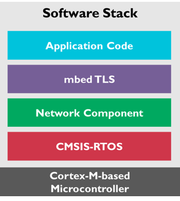

In today's world, secure communication is crucial for many applications to protect data transmission between two network nodes. The Transport Layer Security (TLS) protocol is a standardized technology for establishing a secure, encrypted and authenticated link between two parties over an insecure network. TLS is an industry standard and is used in millions of devices and websites.
The Network component offers two ways to secure communication in an application:
- Using Mbed TLS
- Using Secure Services
Using Mbed TLS
Although the Network component does not offer encryption and secure communication on its own, you can use Arm's mbed TLS software component to achieve this.

From the bottom up:
- The Cortex-M-based microcontroller provides the processor core, storage, memory and network interface.
- The CMSIS-RTOS compliant operating system provides standard services such as scheduling and thread-safety.
- The Network Component provides services, sockets (TCP/IP) and the interface for network communication.
- Building on top of the Network Component, mbed TLS provides an abstraction layer for secure communication.
- The application code uses Mbed TLS to abstract the secure communication from itself.
Why Mbed TLS?
The Mbed TLS library is designed for ease-of-use. The library is documented and has examples so you can easily understand how to use it. In the Network Component, Mbed TLS is used under the Apache 2.0 license, enabling you to use it in both open source and closed source projects. Mbed TLS is a fully featured and standards compliant SSL library offering server and client functionality in one single package.
Difference between SSL/TLS
The TLS protocol is the successor of the SSL protocol. Just like its predecessor, the TLS protocol provides communication security for connections over possibly untrusted networks, like the Internet. The main difference between TLS and SSL is the increased standardization of the workings of the protocol. SSL itself was designed and developed by Netscape. The newer TLS standard is defined in a number of public RFCs and is extended periodically to counter possible weaknesses or add much needed functionality.
Parts of an SSL/TLS Library
In order to perform the SSL or TLS protocol, a number of supporting functionality is required. The SSL/TLS library:
- needs to perform symmetric cryptographic operations, such as AES, to encrypt the data over the connection.
- uses asymmetric cryptographic operations, such as RSA, for identifying and authenticating the parties of the connection.
- uses message digest operations, such as the SHA-256 hash algorithm, to protect the integrity of the information sent over the wire.
- needs to be able to parse, understand and use X.509 certificates.
- has to perform network operations to send and receive the protocol packets.
All of this is hidden from most users and wrapped inside an SSL library, such as Mbed TLS, which developers can use to implement SSL or TLS in their applications.
For more information on Mbed TLS and how it works, visit the high-level design overview page.
Add the mbed TLS library to a µVision project
The Network Examples section carries two examples for secure communication over the IP network: SSL Server and SSL Client. To use the Mbed TLS library in your own projects, follow these steps:
- Download the ARM:mbedTLS library from or use
- Open or create a project using the Network Component.
- Configure the Network Component as required by your application (Ethernet settings, TCP/IP communication, etc.).
- In the Manage Run-Time Environment window expand Security and enable Mbed TLS:
- Configure Mbed TLS using the
mbedTLS_config.h file under Security in the Project window.
- Use the Mbed TLS API to secure your communication.
- Note
- You can use the Mbed TLS API in parallel to any of the secure services that are part of the Network Component.
Using Secure Services
The Network Component offers secure software components that are using Mbed TLS. The user of the Network Component does not see the Mbed TLS API as it is hidden by the standard API of the secure component.
Currently, the following component is available in a secure variant:
To be able to communicate securely, you will need to generate appropriate certificates for the server. The section Creating your own certificates and keys explains how to achieve this for the secure components by using additional tools that are part of the Network Component.
HTTPS Server
The web server and the compact web server have secure variants available. In the Manage Run-Time Environment window simply select the appropriate variant:
Converting the HTTP server to HTTPS
It is also possible to convert an already existing (compact) web server to a secure HTTPS web server. A few simple steps are required to achieve this:
- Download and install the ARM:mbedTLS Software Pack (see Add the mbed TLS library to a µVision project).
- Change the following software components in the Manage Run-Time Environment:
- Set Network:Service:Web Server (Compact) variant to HTTPS. This adds the file
Net_Security.c to the project which contains test keys/certificates. To change them, follow the steps provided in Creating your own certificates and keys.
- Enable Security:mbed TLS or resolve this dependency automatically.
- Update the
mbedTLS_Config.h configuration file with the following (a copy named mbedTLS_config_HTTPS.h is available in the Template folder):
#define MBEDTLS_CONFIG_VERSION 0x03060000
#define MBEDTLS_ENTROPY_HARDWARE_ALT
#define MBEDTLS_AES_ROM_TABLES
#define MBEDTLS_CIPHER_MODE_CBC
#define MBEDTLS_CIPHER_MODE_CFB
#define MBEDTLS_CIPHER_MODE_CTR
#define MBEDTLS_CIPHER_PADDING_PKCS7
#define MBEDTLS_CIPHER_PADDING_ONE_AND_ZEROS
#define MBEDTLS_CIPHER_PADDING_ZEROS_AND_LEN
#define MBEDTLS_CIPHER_PADDING_ZEROS
#define MBEDTLS_KEY_EXCHANGE_PSK_ENABLED
#define MBEDTLS_KEY_EXCHANGE_DHE_PSK_ENABLED
#define MBEDTLS_KEY_EXCHANGE_RSA_PSK_ENABLED
#define MBEDTLS_KEY_EXCHANGE_RSA_ENABLED
#define MBEDTLS_KEY_EXCHANGE_DHE_RSA_ENABLED
#define MBEDTLS_GENPRIME
#define MBEDTLS_NO_PLATFORM_ENTROPY
#define MBEDTLS_PK_RSA_ALT_SUPPORT
#define MBEDTLS_PKCS1_V15
#define MBEDTLS_PKCS1_V21
#define MBEDTLS_SSL_ALL_ALERT_MESSAGES
#define MBEDTLS_SSL_ENCRYPT_THEN_MAC
#define MBEDTLS_SSL_EXTENDED_MASTER_SECRET
#define MBEDTLS_SSL_RENEGOTIATION
#define MBEDTLS_SSL_MAX_FRAGMENT_LENGTH
#define MBEDTLS_SSL_PROTO_TLS1_2
#define MBEDTLS_SSL_ALPN
#define MBEDTLS_SSL_SESSION_TICKETS
#define MBEDTLS_SSL_SERVER_NAME_INDICATION
#define MBEDTLS_X509_RSASSA_PSS_SUPPORT
#define MBEDTLS_AES_C
#define MBEDTLS_ASN1_PARSE_C
#define MBEDTLS_BASE64_C
#define MBEDTLS_BIGNUM_C
#define MBEDTLS_CAMELLIA_C
#define MBEDTLS_CCM_C
#define MBEDTLS_CIPHER_C
#define MBEDTLS_CTR_DRBG_C
#define MBEDTLS_DES_C
#define MBEDTLS_DHM_C
#define MBEDTLS_ENTROPY_C
#define MBEDTLS_GCM_C
#define MBEDTLS_HMAC_DRBG_C
#define MBEDTLS_MD_C
#define MBEDTLS_MD5_C
#define MBEDTLS_OID_C
#define MBEDTLS_PEM_PARSE_C
#define MBEDTLS_PK_C
#define MBEDTLS_PK_PARSE_C
#define MBEDTLS_PKCS5_C
#define MBEDTLS_PKCS12_C
#define MBEDTLS_PLATFORM_C
#define MBEDTLS_RIPEMD160_C
#define MBEDTLS_RSA_C
#define MBEDTLS_SHA1_C
#define MBEDTLS_SHA224_C
#define MBEDTLS_SHA256_C
#define MBEDTLS_SHA512_C
#define MBEDTLS_SSL_CACHE_C
#define MBEDTLS_SSL_COOKIE_C
#define MBEDTLS_SSL_TICKET_C
#define MBEDTLS_SSL_SRV_C
#define MBEDTLS_SSL_TLS_C
#define MBEDTLS_X509_USE_C
#define MBEDTLS_X509_CRT_PARSE_C
#define MBEDTLS_X509_CSR_PARSE_C
#define MBEDTLS_SSL_IN_CONTENT_LEN 4096
#define MBEDTLS_SSL_OUT_CONTENT_LEN 4096
- Set your device's heap to 90KB or more (or increase existing). In the Project window, under Device, open the file
startup_xxx.s and set or more, depending on your application.
- Configure the RTX threads
- If you use RTX v5, you do not need to change the RTX settings, because all resources are statically allocated.
- Update the HTTP Server configuration file (
Net_Config_HTTP_Server.h):
- Change the Port Number to
443 or to 0 (auto-selects 443 for HTTPS or 80 for HTTP)
- Build the example and download to Flash. If it fails, please check your "Read/Write Memory Areas" in your target options.
- You can test the example from a browser by connecting to "https://board_name" or "https://ip_address" (depending on your settings in
Net_Config.h file.
- Note
- The first connection might take a while (a few seconds up to 10s) and depends on the browser and how many sockets/sessions it initially opens (differs in Edge, Chrome, Firefox, etc.). This delay is normal and due to the time required for asymmetric cryptography calculations on the target. After the initial delay, the HTTPS server works almost as fast the HTTP server.
- Your browser will complain during the connection that the certificate has a problem or is not trusted. You will need to add the certificate to your browser's trusted certificate storage manually.
- Do not use the test certificate in productive environments as it is not secret. Before shipping your product, make sure that you have added your own certificates and keys.
Creating your own certificates and keys
The Network Component's HTTPS service adds the file Net_Security.c to the project. This file contains generic test keys/certificates which enable the application to run out of the box. If you want to adapt the keys/certificates to your needs, you can do this by modifying this file or by executing the batch file Net_Security.bat that is part of the Network Component.
Net_Security.bat can be registered in µVision under Tools for general usage:
- Go to Tools --> Customize Tools Menu
- Click the New (Insert) button and enter a meaningful name, for example "Net_Security Keys"
- In the Command box enter
$PRTE\\Network\\Net_Security.bat
- In the Initial Folder box enter
$PRTE\\Network
- In the Arguments box enter
\@K
- Enable Run Independent

Settings required for the Net_Security.bat file
This setting is needed only once in µVision and will work for any project since it uses project related folders.
The file Net_Security.bat is copied to the project (.\RTE\Network) folder together with Net_Security.c. As it is project specific, the batch file can be customized to reflect your specific values for the certificates:
- CA and Server Private Keys: type (default: RSA) and key_size (default: 2048)
- CA certificate: issuer_name (default:CN="Test CA",O="Unknown",C=US), serial (default: 0), not_before (default: 20200101000000), not_after (20301231235959)
- Server certificate: subject_name (default: CN="localhost",O="MyOrganization",C=US), serial (default: 1), not_before (default: 20200101000000), not_after (20301231235959)
- Note
- Replace CN="localhost" with your hostname so that you can add the server's root CA certificate to your "Trusted
Root Certification Authorities". Then the browser will not complain that the website is not trusted.
The beginning of the file contains some environment settings that can also be changed:
- RTEPATH: specifies the path to Software Packs. This is required if the batch file is executed directly from Windows. When it is executed from µVision, it is set automatically.
- Pack Versions (MDK-MW and mbedTLS): only required if you want to select a specific Pack version. By default, the latest available Pack is used.
As soon as you run the batch file from the Tools menu, it will create the keys/certificates and change the Net_Security.c automatically to reflect the changes. You can then continue building the project.
- Note
- The Net_Security.bat file calls the pem2mw.exe utility. This utility does not support all kinds of certificates.
- If you are using an unsupported certificate, you can bypass pem2mw easily by manually creating the output Net_Security.c file:
- Adapt Net_Security.bat to skip calling pem2mw (optional)
- Copy the contents of ca.crt into NetSecurity_ServerCA structure in Net_Security.c and add leading " and trailing \n" to each line
- Copy the contents of server.crt into NetSecurity_ServerCert structure in Net_Security.c and add leading " and trailing \n" to each line
- Copy the contents of server.key into NetSecurity_ServerKey structure in Net_Security.c and add leading " and trailing \n" to each line
Code Example
Server.key
-----BEGIN PUBLIC KEY-----
MFkwEwYHKoZIzj0CAQYIKoZIzj0DAQcDQgAEd3Jlb4FLOZJ51eHxeB+sbwmaPFyh
sONTUYNLCLZeC1clkM2vj3aTYbzzSs/BHl4HToQmvd4Evm5lOUVElhfeRQ==
-----END PUBLIC KEY-----
Net_Security.c
const uint8_t NetSecurity_ServerKey[] =
"-----BEGIN PUBLIC KEY-----\n"
"MFkwEwYHKoZIzj0CAQYIKoZIzj0DAQcDQgAEd3Jlb4FLOZJ51eHxeB+sbwmaPFyh\n"
"sONTUYNLCLZeC1clkM2vj3aTYbzzSs/BHl4HToQmvd4Evm5lOUVElhfeRQ==\n"
"-----END PUBLIC KEY-----\n"
;
SMTPS Client
The e-mail client is available in a secure variant. In the Manage Run-Time Environment window, simply select the appropriate variant:
Converting the SMTP client to SMTPS
It is also possible to convert an already existing e-mail client to a secure SMTPS e-mail client. A few simple steps are required to achieve this:
- Download and install the ARM:mbedTLS Software Pack (see Add the mbed TLS library to a µVision project).
- Change the following software components in the Manage Run-Time Environment:
- Set Network:Service:SMTP Client variant to SMTPS. This adds the file
Net_Security.c to the project which contains an empty CA certificate. To define it, follow the steps provided in Adding server root CA certificate.
- Enable Security:mbed TLS or resolve this dependency automatically.
Update the mbedTLS_Config.h configuration file with the following (a copy named mbedTLS_config_SMTPS.h is available in the Template folder):
#define MBEDTLS_CONFIG_VERSION 0x03060000
#define MBEDTLS_ENTROPY_HARDWARE_ALT
#define MBEDTLS_AES_ROM_TABLES
#define MBEDTLS_CIPHER_MODE_CBC
#define MBEDTLS_CIPHER_PADDING_PKCS7
#define MBEDTLS_ECP_DP_SECP256R1_ENABLED
#define MBEDTLS_ECP_DP_SECP384R1_ENABLED
#define MBEDTLS_ECP_NIST_OPTIM
#define MBEDTLS_ECDSA_DETERMINISTIC
#define MBEDTLS_KEY_EXCHANGE_PSK_ENABLED
#define MBEDTLS_KEY_EXCHANGE_ECDHE_PSK_ENABLED
#define MBEDTLS_KEY_EXCHANGE_RSA_PSK_ENABLED
#define MBEDTLS_KEY_EXCHANGE_ECDHE_RSA_ENABLED
#define MBEDTLS_KEY_EXCHANGE_ECDHE_ECDSA_ENABLED
#define MBEDTLS_ERROR_STRERROR_DUMMY
#define MBEDTLS_NO_PLATFORM_ENTROPY
#define MBEDTLS_PK_RSA_ALT_SUPPORT
#define MBEDTLS_PKCS1_V15
#define MBEDTLS_PKCS1_V21
#define MBEDTLS_SSL_ALL_ALERT_MESSAGES
#define MBEDTLS_SSL_ENCRYPT_THEN_MAC
#define MBEDTLS_SSL_EXTENDED_MASTER_SECRET
#define MBEDTLS_SSL_RENEGOTIATION
#define MBEDTLS_SSL_MAX_FRAGMENT_LENGTH
#define MBEDTLS_SSL_PROTO_TLS1_2
#define MBEDTLS_SSL_ALPN
#define MBEDTLS_SSL_SESSION_TICKETS
#define MBEDTLS_SSL_SERVER_NAME_INDICATION
#define MBEDTLS_AES_C
#define MBEDTLS_ASN1_PARSE_C
#define MBEDTLS_ASN1_WRITE_C
#define MBEDTLS_BASE64_C
#define MBEDTLS_BIGNUM_C
#define MBEDTLS_CCM_C
#define MBEDTLS_CIPHER_C
#define MBEDTLS_CTR_DRBG_C
#define MBEDTLS_ECDH_C
#define MBEDTLS_ECDSA_C
#define MBEDTLS_ECP_C
#define MBEDTLS_ENTROPY_C
#define MBEDTLS_GCM_C
#define MBEDTLS_HMAC_DRBG_C
#define MBEDTLS_MD_C
#define MBEDTLS_OID_C
#define MBEDTLS_PEM_PARSE_C
#define MBEDTLS_PK_C
#define MBEDTLS_PK_PARSE_C
#define MBEDTLS_PLATFORM_C
#define MBEDTLS_RSA_C
#define MBEDTLS_SHA1_C
#define MBEDTLS_SHA224_C
#define MBEDTLS_SHA256_C
#define MBEDTLS_SHA512_C
#define MBEDTLS_SSL_CACHE_C
#define MBEDTLS_SSL_COOKIE_C
#define MBEDTLS_SSL_TICKET_C
#define MBEDTLS_SSL_CLI_C
#define MBEDTLS_SSL_TLS_C
#define MBEDTLS_X509_USE_C
#define MBEDTLS_X509_CRT_PARSE_C
#define MBEDTLS_X509_CRL_PARSE_C
#define MBEDTLS_SSL_IN_CONTENT_LEN 4096
#define MBEDTLS_SSL_OUT_CONTENT_LEN 4096
- Set your device's heap to at least 49 KB or increase appropriately. In the Project window, under Device, open the file
startup_xxx.s and set or more, depending on your application.
- Configure the RTX threads
- If you use RTX v5, you do not need to change the RTX settings, because all recources are statically allocated.
- Build the example and download to Flash. If it fails, please check your "Read/Write Memory Areas" in your target options.
- You can test the example by sending an e-mail to your e-mail account, for example to Gmail or Yahoo.
Adding server root CA certificate
The SMTPS service of the Network Component adds the Net_Security.c file to the project. This file contains an empty section for the e-mail server root CA certificate, so you cannot initially build the application. You must provide a valid root CA certificate for the server that you use to send e-mail. The certificate must be provided in PEM-encoding. Copy the contents of the certificate into the NetSecurity_EmailServerCA structure in Net_Security.c and add a leading " and a trailing \n" to each line.
const uint8_t NetSecurity_EmailServerCA[] =
"-----BEGIN CERTIFICATE-----\n"
"... base64 data ...\n"
"-----END CERTIFICATE-----\n";
Verifying the e-mail server is required by default to increase e-mail security. If you do not want to verify the server, you can disable server verification by defining the SMTPS_SERVER_VERIFY_NONE in your project (Options for Component Class Network - SMTP_Client - C/C++ Preprocessor Symbols - Define).
- Note
- It is not necessary to create your own certificates or keys to send secure e-mail using SMTPS.